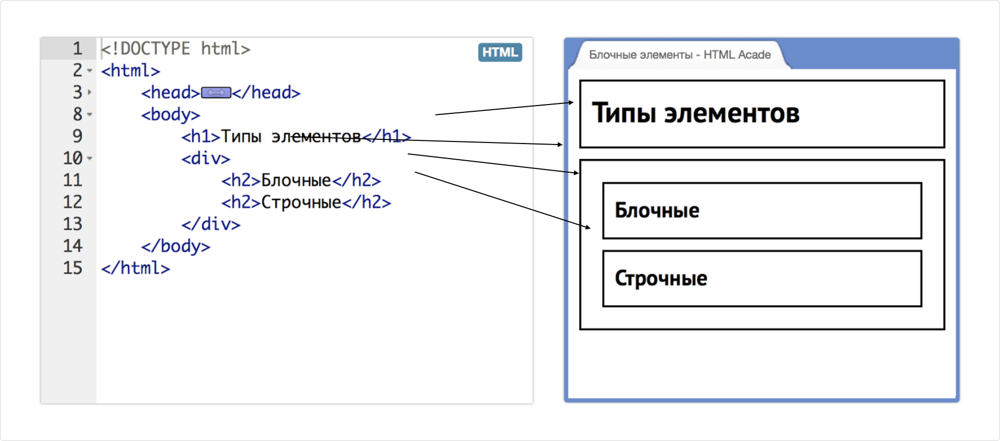

Свойство Display в CSS
К каждому HTML элементу на странице соответствует прямоугольная область. Такие области называют боксами.
По умолчанию все HTML элементы обладают определенными боксами. Но стандартное отображение элементов бокса всегда можно поменять с помощью CSS-свойства Display.
Тип отображения сразу влияет на две вещи в потоке документа:
- 1 На расположение самого бокса.
- 2 На расположение дочерних элементов внутри бокса.
К примеру у элемента li тип отображения по умолчанию
display: block Это означает что элементы списка отображаются один под другим на странице.
.li {
display: block;
}
Если поменять значение на display: inline элементы списка станут отображаться
друг за другом, как будто слова расположенные в предожении.
.li {
display: inline;
}
Возможность изменять внешний вид любого элемента позволяет вам ориентироваться на их семантическое значение при выборе, не беспокоясь о визуальном представлении. Внешний вид элементов можно легко настроить.
В CSS существует четыре основных типа боксов
box types, которые определяют,
как элементы отображаются и взаимодействуют с другими элементами:
- 1 › Блочный бокс
block - 2 › Строчный бокс
inline - 3 › Строчно-блочный
inline-block - 4 › Флексы и Гриды
flexboxиgrid
Блочный бокс
Блочный бокс — это прямоугольная область на странице, представляющая
собой просто прямоугольник. По умолчанию блочными боксами обладают крупные
поточные элементы, которые не относятся к фразовым.
Например, блочными боксами по умолчанию обладают такие элементы, как:
div, h1, header, footer, section, p, ul, li
Блочные боксы обладают рядом ключевых характеристик поведения:
-
1 › Блочный бокс обладает «эгоистичным» поведением, проявляющимся в принудительном переносе строки до и после него. Это означает, что никакой другой элемент не может находиться на той же строке, даже если блочный бокс содержит мало контента или занимает лишь небольшую часть строки. Он всегда остается единственным на своей строке.
-
2 › На блочные боксы нормально действуют все свойства блочной модели:
width,height,margin,padding -
3 › По высоте блочные боксы подстраиваются под содержимое, сжимаясь в соответствии с его размерами.
Пример поведения блочных боксов на картинке ниже:

Внутри тега body находятся четыре элемента, и все четыре - блочные.
Видно, что строки текста внутри h2 очень короткие,
и элементы могли бы сжаться под размер текста.
Однако заголовки растягиваются на всю доступную ширину родительского контейнера,
за вычетом внутренних отступов.
Кроме того, если бы заголовки сжались под контент, они поместились бы на одну строку. Но каждый из них занимает отдельную строку.
Строчный бокс
Строчные боксы — это полная противоположность блочным. Если блочный бокс представляет собой крупную неразрывную прямоугольную область, то строчный бокс — это фрагмент текста, который может быть разорван и располагаться на нескольких строках.
Элементы, боксы которых по умолчанию являются строчными, — это теги, предназначенные
для разметки небольших фрагментов текста или словосочетаний:
a, span, button, strong, em, i, b, time
У строчных боксов несколько отличий от блочных:
-
1 Строчные боксы ведут себя аналогично тексту, то есть могут располагаться как на одной строке, так и на нескольких. Если такой бокс не помещается в пределах одной строки, он автоматически переносится на следующую.
-
2 Строчные боксы плохо совместимы со свойствами блочной модели. Некоторые свойства на них вообще не действуют, а другие — лишь частично. Например, отступы в строчных боксах работают только по горизонтали.
-
3 Размеры строчных боксов всегда определяются их содержимым.
В приведённом ниже примере, благодаря подсветке, можно увидеть, как ведёт себя строчный бокс, когда он не помещается в строке.
Строчные боксы — это не только теги em и span, но и обычный текст,
который не обёрнут во фразовый тег. Такие фрагменты текста автоматически
оборачиваются в анонимный строчный бокс. В рассмотренном примере три таких анонимных бокса
(это участки текста между явными строчными боксами, принадлежащими тегам).
Блочно-строчный бокс
Блочно-строчный бокс — это тип бокса в CSS, который сочетает в себе свойства как блочных, так и строчных боксов.
Элементы с display: inline-block ведут
себя как строчные элементы,
то есть они располагаются в строке и могут находиться рядом с
другими элементами, но при этом могут иметь заданные ширину,
высоту, отступы и поля, как у блочных элементов. Это позволяет управлять размерами и
расположением элементов, сохраняя их способность располагаться в строке.
Флексбоксы и Гриды
Флексы с Гридами — основной инструмент построения крупных сеток и микросеток.
При использовании флексов важно учитывать несколько особенностей, которые следует иметь в виду:
-
Все блоки легко становятся “гибкими” благодаря названию
flex. Элементы могут сжиматься и растягиваться в соответствии с заданными правилами, занимая необходимое пространство. -
Выравнивание по вертикали, горизонтали и базовой линии текста работает отлично.
-
Расположение элементов в HTML не является определяющим. Его можно изменить с помощью CSS.
-
Элементы могут автоматически формировать несколько строк или столбцов, заполняя всё доступное пространство.
-
Синтаксис CSS-правил очень прост и осваивается довольно быстро.